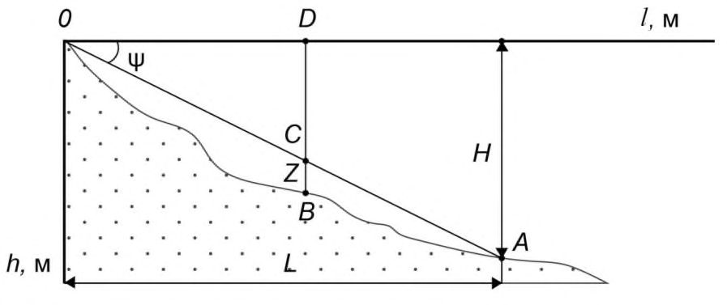
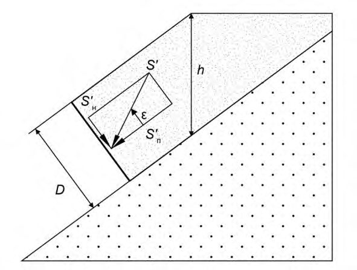
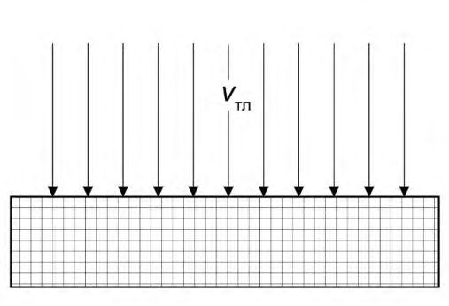
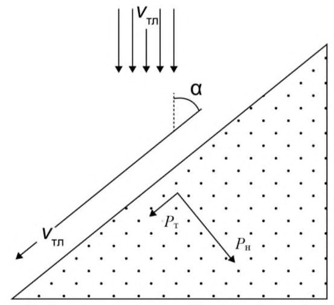
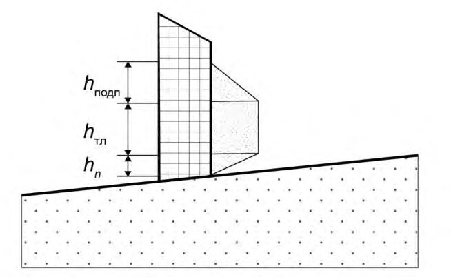
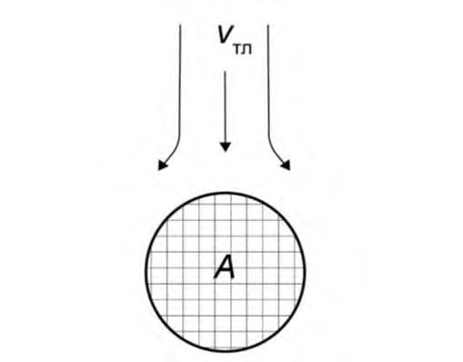
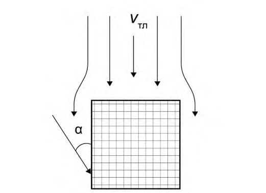
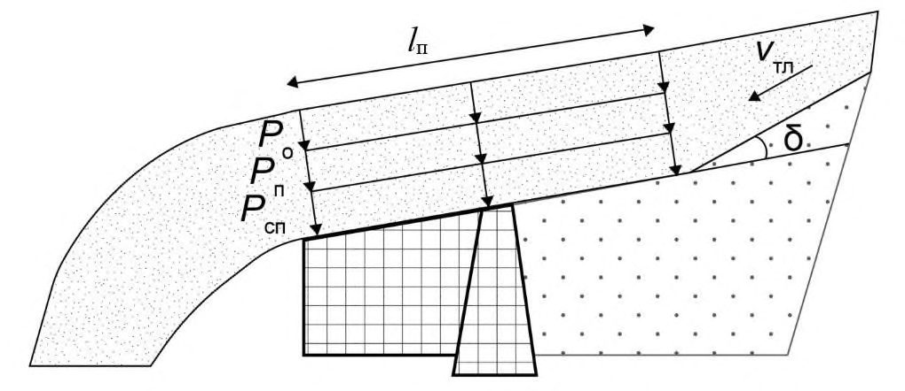
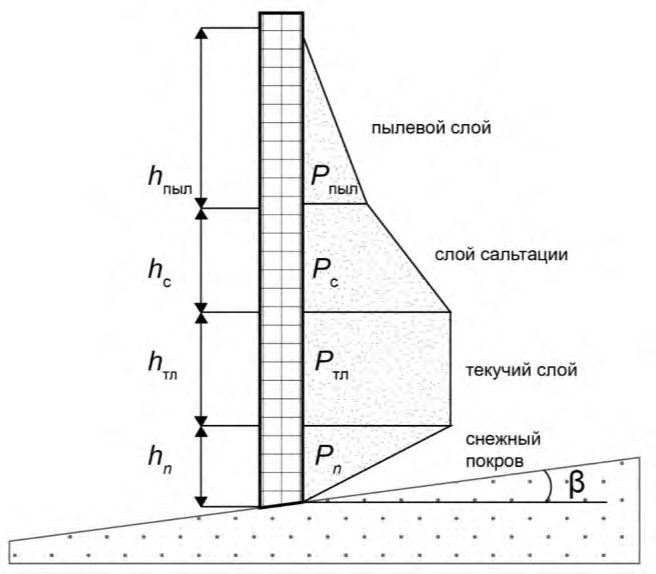

СП 428.1325800.2018 «Инженерные изыскания для строительства в лавиноопасных райо»
О документе: разработчики, утверждение, регистрация, ключевые слова
СВОД ПРАВИЛ
СП 428.1325800.2018
Общие требования
Издание официальное
Москва 2018
- 1 ИСПОЛНИТЕЛИ - Общество с ограниченной ответственностью «Институт геотехники и инженерных изысканий в строительстве» (ООО «ИГИИС»), Федеральное государственное бюджетное образовательное учреждение высшего образования Московский государственный университет имени М.В. Ломоносова (МГУ им. М.В. Ломоносова)
- 2 ВНЕСЕН Техническим комитетом по стандартизации ТК 465 «Строительство»
- 3 ПОДГОТОВЛЕН к утверждению Департаментом градостроительной деятельности и архитектуры Министерства строительства и жилищно-коммунального хозяйства Российской Федерации (Минстрой России)
- 4 УТВЕРЖДЕН Приказом Министерства строительства и жилищно-коммунального хозяйства Российской Федерации от 19 декабря 2018 г. № 828/пр и введен в действие с 20 июня 2019 г.
- 5 ЗАРЕГИСТРИРОВАН Федеральным агентством по техническому регулированию и метрологии (Росстандарт)
- 6 ВВЕДЕН ВПЕРВЫЕ
В случае пересмотра (замены) или отмены настоящего свода правил соответствующее уведомление будет опубликовано в установленном порядке. Соответствующая информация, уведомление и тексты размещаются также в информационной системе общего пользования - на официальном сайте разработчика (Минстрой России) в сети Интернет
© Минстрой России, 2018
Настоящий нормативный документ не может быть полностью или частично воспроизведен, тиражирован и распространен в качестве официального издания на территории Российской Федерации без разрешения Минстроя России
Дата введения 2019-06-20
УДК 624.131
ОКС 91.040.01
Ключевые слова: снеголавинные исследования, метеорологические наблюдения, лавины, лавиноопасные районы, лавинная активность, зона зарождения лавины, зона транзита лавины, зона отложения лавины, дальность выброса лавины, конус выноса лавины, динамические характеристики снежных лавин
ИСПОЛНИТЕЛЬ
АО «НИЦ «Строительство»
Руководитель
разработки
Генеральный директор
\_\_\_\_\_\_\_\_\_\_\_\_\_\_\_
А.В. Кузьмин
СОИСПОЛНИТЕЛЬ ООО «ИГИИС»
Руководитель
разработки
Генеральный директор
\_\_\_\_\_\_\_\_\_\_\_\_\_\_\_
М.И. Богданов
Ответственный
исполнитель
Первый заместитель
генерального директора
\_\_\_\_\_\_\_\_\_\_\_\_\_\_\_
Г.Р. Болгова
Введение
Настоящий свод правил разработан с целью реализации основных положений федеральных законов от 29 декабря 2004 г. № 190-ФЗ «Градостроительный кодекс Российской Федерации», от 30 декабря 2009 г. № 384-ФЗ «Технический регламент о безопасности зданий и сооружений», от 27 декабря 2002 г. № 184-ФЗ «О техническом регулировании».
При разработке учтены требования Постановления Правительства Российской Федерации от 19 января 2006 г. № 20 «Об инженерных изысканиях для подготовки проектной документации, строительства, реконструкции объектов капитального строительства» и постановления Правительства Российской Федерации от 16 февраля 2008 г. № 87 «О составе разделов проектной документации и требованиях к их содержанию».
Свод правил по инженерным изысканиям для строительства в лавиноопасных районах разработан в развитие обязательных положений и требований СП 47.13330.2016 «СНиП 1102-96 Инженерные изыскания для строительства. Основные положения».
Разработка свода правил выполнена авторским коллективом: ООО «ИГИИС» (руководитель работы -канд. геол.-минерал. наук М.И. Богданов , ответственный исполнитель Г.Р. Болгова , исполнитель Е.В. Леденева ), Научно-исследовательская лаборатория снежных лавин и селей Географического факультета Федерального государственного бюджетного образовательного учреждения высшего образования Московский государственный университет имени М.В. Ломоносова (канд. геогр. наук А.Л. Шныпарков - руководитель; канд. геогр. наук С.А. Сократов - руководитель темы; Ю.Г. Селиверстов -ответственный исполнитель; канд. геогр. наук Т.Г. Глазовская ; А.Ю. Комаров ; канд. геогр. наук А.С. Турчанинова ).
Engineering geological survey for construction in snow avalanches-endangered regions. General requirements
1Область применения
Настоящий свод правил устанавливает общие требования и правила производства инженерных изысканий для подготовки документов территориального планирования, документации по планировке территории и выбора площадок (трасс) строительства, при подготовке проектной документации объектов капитального строительства, строительстве и реконструкции зданий и сооружений в лавиноопасных районах Российской Федерации.
2Нормативные ссылки
В настоящем своде правил использованы нормативные ссылки на следующие документы:
ГОСТ 22.0.03-97/ГОСТ Р 22.0.03-95 Безопасность в чрезвычайных ситуациях. Природные чрезвычайные ситуации. Термины и определения
СП 47.13330.2016 «СНиП 11-02-96 Инженерные изыскания для строительства. Основные положения»
СП 115.13330.2016 «СНиП 22-01-95 Геофизика опасных природных воздействий» СП 116.13330.2012 «СНиП 22-02-2003 Инженерная защита территорий, зданий и сооружений от опасных геологических процессов. Основные положения»
СП 317.1325800.2017 Инженерно-геодезические изыскания для строительства. Общие правила производства работ
Примечание - При пользовании настоящим сводом правил целесообразно проверить действие ссылочных документов в информационной системе общего пользования - на официальном сайте федерального органа исполнительной власти в сфере стандартизации в сети Интернет или по ежегодному информационному указателю «Национальные стандарты», который опубликован по состоянию на 1 января текущего года, и по выпускам ежемесячного информационного указателя «Национальные стандарты» за текущий год. Если заменен ссылочный документ, на который дана недатированная ссылка, то рекомендуется использовать действующую версию этого документа с учетом всех внесенных в данную версию изменений. Если заменен ссылочный документ, на который дана датированная ссылка, то рекомендуется использовать версию этого документа с указанным выше годом утверждения (принятия). Если после утверждения настоящего свода правил в ссылочный документ, на который дана датированная ссылка, внесено изменение, затрагивающее положение, на которое дана ссылка, то это положение рекомендуется применять без учета данного изменения. Если ссылочный документ отменен без замены, то положение, в котором дана ссылка на него, рекомендуется применять в части, не затрагивающей эту ссылку. Сведения о действии сводов правил целесообразно проверить в Федеральном информационном фонде стандартов.
3Термины и определения
В настоящем своде правил применены термины по ГОСТ 22.0.03, СП 47.13330, СП 115.13330, СП 116.13330, а также следующие термины с соответствующими определениями:
- 3.1воздушная волна
- Отделяющийся во время движения от головной части тела лавины снеговоздушный поток с повышенным давлением, вызывающий разрушения вне зоны отложения основной массы лавинного снега.
- 3.2высота снежного покрова
- Вертикальное расстояние (по отвесу) от подстилающей поверхности до поверхности снежного покрова.
- 3.3высота фронта лавины
- Максимальное значение высоты головной части лавины в каждой точке поверхности, по которой она движется, измеренная по вертикали.
- 3.4генетические типы снежных лавин
- Таксономические единицы классификации лавин, характеризующиеся сходством причин их возникновения.
- 3.5дальность выброса лавины
- Расстояние от линии (точки) отрыва лавины до места остановки ее фронта, измеренное вдоль пути движения лавины.
- 3.6динамические характеристики лавин
- Количественные параметры, характеризующие скорость и давление лавины.
- 3.7зона зарождения лавин (лавинный очаг)
- Верхняя часть лавиносбора, чаще всего воронкообразное расширение на склоне, где начинается движение снега в виде лавины.
- 3.8зона транзита лавин
- Средняя часть лавиносбора (между зонами зарождения и отложения лавин), отрицательная форма рельефа в виде желоба на склоне, по которой движется лотковая лавина, или слабо расчлененный склон, по которому сходит осов.
- 3.9зона отложения лавин
- Нижняя часть лавиносбора, где происходит преимущественная остановка снежных масс и скопление минеральных и органических включений, вынесенных лавинами со склона.
- 3.10конус выноса лавины
- Участок земной поверхности, на котором происходят остановка и отложение снега, вынесенного лавиной, соответствующий месту отложения обломочного материала, сохраняющегося после стаивания лавинного снега в виде слабовыпуклых конусов у выхода лавинных лотков в долину.
- 3.11лавина из рыхлого снега
- Лавина, образующаяся из сухого снега, не обладающего способностью к сцеплению.
- 3.12лавина из снежной доски
- Лавина, образующаяся из слоя снега, обладающего сцеплением и способностью сопротивляться разрыву.
- 3.13лавина из сухого снега
- Лавина, образующаяся обычно при отрицательной температуре воздуха, сопровождающаяся часто снежным пылевым облаком и воздушной волной.
- 3.14лавина из мокрого снега
- Лавина, состоящая из мокрых, влажных и увлажненных снежных масс, и образующаяся в периоды оттепелей, весеннего снеготаяния, выпадения на снежный покров дождя или мокрого снега (не относится к водоснежным потокам - быстрым смещениям снежного покрова, возможным по уклону до одного градуса и происходящим при существенном участии талой воды).
- 3.15лавинная активность
- Интегральная характеристика интенсивности лавин на определенной территории. Интенсивность характеризуется параметрами как самих снежных лавин (объем, средний за зиму объем и др.), так и пространственновременными параметрами факторов лавинообразования (количество лавинных очагов на единицу длины долины или площади и др.).
- 3.16лавинный бассейн
- Система лавиносборов, лавины из которых образуют единый конус выноса или имеют единую зону отложения.
- 3.17лавинный режим
- Совокупность параметров, характеризующих лавины на определенной территории.
- 3.18лавинный снежник
- Скопление снега, образованное лавинами, сохраняющееся на земной поверхности в течение части или всего теплого времени года, отличающееся повышенной мощностью и загрязненностью.
- 3.19лавиноопасный период
- Интервал времени, в течение которого условия снегонакопления и характер механической устойчивости снега на склонах, обусловленные развитием метеорологических условий и процессами внутри снежного покрова, могут привести к сходу лавин.
- 3.20лавиноактивный склон
- Склон, с которого возможен сход лавин.
- 3.21лавиноопасные слои
- Слои снежной толщи, по которым происходит обрушение снежных лавин.
- 3.22лавиносбор
- Участок склона и дна долины, на котором образуется, движется и останавливается снежная лавина.
- 3.23лотковая лавина
- Снежная лавина, которая движется в русле, борозде или лотке.
- 3.24осов
- Лавина в виде снежного оползня, соскальзывающего по поверхности слаборасчлененного склона, не имеющего хорошо выраженных эрозионных борозд или врезов.
- 3.25превышение лавиносбора (относительная высота падения лавин)
- Разность максимальной и минимальной высот лавиносбора.
- 3.26противолавинные мероприятия
- Пассивные и активные профилактические мероприятия, строительство противолавинных сооружений и комплексные методы защиты от лавин.
- 3.27противолавинные сооружения
- Инженерные конструкции, предназначенные для предотвращения возможного ущерба от лавин, подразделяющиеся в зависимости от цели на две группы: снегоудерживающие и непосредственно защитные.
- 3.28пылевая лавина
- Лавина из сухого снега или фирна, представляющая собой облако снежной пыли.
- 3.29размеры лавин
- Количественные показатели, характеризующие лавины: ширина и длина площади отрыва, средняя и максимальная высота оторвавшегося слоя, высота лавинного отложения (объем), размеры зоны действия воздушной волны и другие геометрические характеристики.
- 3.30скольжение снега на склоне
- Движение снега в результате уплотнения и внутренней сдвиговой деформации параллельно склону.
- 3.31смешанная лавина
- Лавина, состоящая при движении из текучей и пылевой части.
- 3.32снежность
- Характеристика природных условий территории, связанная с наличием снежного покрова и включающая условия выпадения и отложения твердых осадков, возникновения, существования и схода снежного покрова, данные о количестве выпадающего из атмосферы льда и максимальных снегозапасах.
- 3.33снежный покров
- Результат аккумуляции снега на поверхности грунта и, в частности, пространственное распространение заснеженных территорий.
- 3.34сползание снега на склоне
- Движение под действием гравитации снежного покрова по склону без видимых нарушений его сплошности, зависящее от шероховатости подстилающей поверхности.
- 3.35стратиграфия снежного покрова
- Последовательное чередование слоев снега с разным строением и физико-механическими свойствами.
- 3.36текучая лавина
- Снежная лавина, движущаяся в виде потока вдоль поверхности склона в соответствии со всеми ее изменениями.
- 3.37устойчивость снега на склоне
- Способность лежащего на склоне снежного покрова сохранять равновесие под действием на него внешних сил.
- 3.38факторы лавинообразования
- Комплекс причин (орографических, геоморфологических, метеорологических, геоботанических, антропогенных), приводящих к сходу лавин.
- 3.39фронт лавины
- Передняя поверхность головной части лавины, чаще всего в виде вала.
4Общие требования
Оценку лавинной опасности следует проводить во всех случаях, когда проектируемый объект располагается на склонах или у их подножия с учетом СП 115.13330.2016 (таблица 5.1).
- рельеф территории и геоморфологические признаки сходов лавин;
- климат района и метеорологические условия сходов лавин;
- растительный покров и геоботанические признаки сходов лавин;
- характеристики снежного покрова и лавин.
Дополнительно задание на выполнение инженерных изысканий в лавиноопасных районах должно содержать перечень расчетных динамических характеристик лавин, необходимых для обоснования выбора основных параметров сооружений и определения условий их эксплуатации, обеспеченность расчетных характеристик или ссылки на нормативные технические документы, устанавливающие требования к перечню и обеспеченности расчетных характеристик.
Передаваемые застройщиком (техническим заказчиком) исполнителю копии топографических и иных карт и планов, ортофотокарт и ортофотопланов в цифровой, графической, фотографической или иной форме, должны охватывать всю территорию, на которой возможны образование, движение и остановка лавин в районе площадки (площадок) и (или) трассы (трасс) линейного сооружения. Для предварительного выявления зон зарождения лавин используют карты и планы, масштаб которых должен быть не менее 1:25 000. Для определения расчетных характеристик используют топографические планы.
Дополнительно программа должна содержать следующие сведения:
- сети метеорологических, снегомерных и снеголавинных станций в районе изысканий;
- основных особенностях факторов лавинообразования в районе изысканий;
- основных чертах снежности, лавинной активности и лавинного режима в районе изысканий;
- наличии материалов метеорологических, снегомерных и снеголавинных наблюдений Росгидромета, постов (станций) других министерств и ведомств с оценкой возможности их использования при решении поставленных задач;
- требуемых расчетных снеголавинных характеристиках и методах их определения.
При выполнении инженерных изысканий в лавиноопасных районах в их составе должно быть предусмотрено выполнение снеголавинных исследований. Как правило, снеголавинные исследования выполняют в составе инженерно-гидрометеорологических изысканий.
4.9Инженерно-геодезические изыскания
Инженерно-геодезические изыскания для строительства в лавиноопасных районах выполняют в соответствии с требованиями СП 47.13330.2016 (разделы 4 и 5) и СП 317.1325800.
4.10Инженерно-геологические изыскания
Инженерно-геологические изыскания для строительства в лавиноопасных районах выполняют в соответствии с требованиями СП 47.13330.2016 (разделы 4 и 6).
4.11Инженерно-гидрометеорологические изыскания
Инженерно-гидрометеорологические изыскания для строительства в лавиноопасных районах выполняют в соответствии с требованиями СП 47.13330.2016 (разделы 4 и 7) и требованиями настоящего свода правил для комплексного изучения гидрометеорологических условий территории (района, площадки, участка, трассы) намечаемого строительства и получения необходимых материалов и данных для определения возможности градостроительной деятельности в лавиноопасных районах, выбора местоположения площадок (трасс линейных сооружений), обоснования выбора основных параметров сооружений и определения условий их эксплуатации, а также разработки рекомендаций по защите от лавин.
- сбор, анализ и обобщение материалов гидрометеорологической, картографической и снеголавинной изученности территории, оценка возможности их использования при выполнении полевых и камеральных работ;
- дешифрирование космических и аэрофотоснимков с использованием топографических карт, цифровых моделей рельефа;
- полевые обследования территории (района, участка площадки, трассы) в летний и зимний периоды;
- наблюдения за метеорологическими характеристиками и лавинами в зимний период;
- камеральная обработка материалов с определением расчетных снеголавинных характеристик;
- составление технического отчета.
Необходимость выполнения отдельных видов работ, условия их комплексирования и заменяемости следует устанавливать в программе с учетом задач градостроительной деятельности, уровня ответственности проектируемых зданий и сооружений, их вида и назначения, а также степени гидрометеорологической (в том числе снеголавинной) изученности территории.
- результаты инженерно-гидрометеорологических изысканий прошлых лет, выполненных для обоснования проектирования и строительства объектов различного назначения, данные локального мониторинга (стационарных наблюдений), сведения о природных условиях территории, содержащиеся в федеральной государственной информационной системе территориального планирования, информационных системах обеспечения градостроительной деятельности, государственных и негосударственных фондах;
- карты лавинной опасности и активности, кадастры лавин;
- данные наблюдений гидрометеорологических и снеголавинных станций;
- научные публикации, посвященные изучению снежного покрова, снежных лавин и оценке лавинной опасности в районе исследования.
Должны быть получены сведения о температуре воздуха в зимний период, максимальных и минимальных значениях температуры воздуха, влажности воздуха, количестве осадков и их интенсивности, числе дней с осадками различной интенсивности в период отрицательных температур воздуха, высоте снежного покрова и ее изменении в период устойчивого залегания, датах (начала и окончания) залегания устойчивого снежного покрова, ветровом режиме (средней и максимальной скорости ветра по месяцам и за зимний период в целом, преобладающем направлении ветра по месяцам), наличии метелевой деятельности, количестве оттепелей, вероятности выпадения дождя на снежный покров. Данные должны быть приведены к условиям участка изысканий.
- повторяемость (частота схода) снежных лавин;
- продолжительность лавиноопасного периода;
- генетические типы снежных лавин;
- продолжительность залегания снежного покрова;
- высоту и стратиграфию снежного покрова;
- физико-механические характеристики снежного покрова в районе изысканий.
- высота снежного покрова в зонах зарождения лавин;
- физико-механические характеристики снежного покрова в зонах зарождения лавин, включающие плотность, сопротивление снега нагрузкам сжатию, сдвигу, растяжению;
- давление снега на располагаемые на склонах сооружения, вызванное сползанием и скольжением;
- объемы лавин;
- высота фронта лавин;
- высота пылевых лавин;
- скорость лавин;
- давление лавин и воздушной волны;
- дальность выброса лавин;
- дальность действия воздушной волны;
- плотность и высота отложений лавин.
Значения высоты фронта, скорости и давления лавин определяют для мест расположения проектируемых объектов.
Примечание - Данный вид работ допускается выполнять в составе инженерногеологических изысканий.
0°-20° - территории, на которых зарождение лавин невозможно, а в случае расположения их под склонами, на которых возможно образование лавин, это территории, на которых располагаются зоны отложения лавин;
20°-25° - склоны, на которых вероятность образования лавин крайне низка;
25°-60° - склоны, на которых возможно образование лавин; более 60° - склоны, на которых снег не удерживается.
Потенциально лавиноопасными являются участки склонов, соответствующие условиям выделения зон зарождения лавин, но покрытые густой древесной растительностью.
Каталог лавиносборов должен содержать следующие сведения:
- номер лавиносбора;
- морфологический тип;
- характеристики морфометрии зон зарождения, транзита и отложения (площади, отметки высот, максимальные и средние углы наклона);
- экспозицию склона и диапазон ее изменения;
- значения абсолютной высоты нижней границы распространения лавин (максимальной и заданной обеспеченности), действия воздушной волны;
- высота фронта лавин по видимым следам;
- характер поверхности (по таблице Б.9 приложения Б);
- количество зарегистрированных лавин;
- параметры лавин (средние и максимальные).
Маршруты должны охватывать всю площадь в пределах исследуемой территории, а также прилегающие склоны, на которых по материалам снеголавинной изученности и дешифрирования, возможно образование, движение и остановка лавин.
Количество маршрутов, состав и объемы работ при выполнении рекогносцировочного обследования следует устанавливать в зависимости от количества лавиносборов, детальности задач изысканий и их назначения.
- регистрацию и описание сошедших лавин, определяют и картографируют места их образования, устанавливают абсолютную высоту линии или точки отрыва, высоту уступа на линии отрыва, экспозицию склона, характер поверхности скольжения, нижнюю границу зоны отложения, высоту падения, длину пути, генетический тип, измеряют объем и линейные размеры лавинных отложений, высоту фронта лавины, определяют плотность лавинного снега, устанавливают и наносят на карту следы действия воздушной волны (полученные данные вносятся в кадастр лавин);
- измерения высоты снежного покрова в лавиносборах;
- шурфование снежной толщи на склонах различной экспозиции и различных высотных зон, с целью получения данных о пространственной изменчивости характеристик снежного покрова и наличии лавиноопасных слоев снега.
Выделяют и описывают формы рельефа, свидетельствующие о движении лавин и их рельефообразующей деятельности, в том числе:
- обломочные конусы, расположенные под склонами у выхода лавинных лотков и сложенные неотсортированными отложениями камней, дерна, обломков деревьев, кустарников, обломков разрушенных сооружений и пр.;
- гряды обломочного материала с растительными остатками, параллельные склону, создаваемые осовами у подножия склонов;
- параллельные, радиальные или пересекающиеся друг с другом гряды обломочного материала, образующиеся при движении лавины по поверхности дна долины в процессе выпахивания лавинного ложа;
- лавинные бугры, представляющие собой асимметричные нагромождения высотой до 40 м, образованные выбросом речного аллювия на противоположный берег реки;
- ямы выбивания в виде эллипсоидальных углублений, вытянутых вдоль склона, образованные от удара лавин о дно долин.
Выявляют наличие уступов в зоне транзита для определения возможности образования прыгающей снежной лавины. Определяют ширину лавинного потока по характерным признакам в растительности. Устанавливают и картографируют расположение лавинных снежников, характеризующихся содержанием обломков скал, грунта, дерна, стволов и веток деревьев и т.п. и выделяющихся на местности по цвету от желтоватого и светло-серого до коричневого и темно-серого.
В пределах лавиносборов должны быть выделены участки с различным характером поверхности склона, определяющим значения коэффициентов при выполнении расчетов по сползанию и скольжению снега, динамических характеристик лавин и определении нагрузок на противолавинные сооружения. Должны быть выделены участки:
- с валунами (глыбами) диаметром более или равным 30 см;
- мелкими и крупными скальными блоками;
- высоким кустарником или подростом деревьев не менее 1 м в высоту;
- бугристой поверхностью, образованной дерниной и мелкими кустарниками (высотой не менее 0,5 м);
- явно выраженными тропами животных;
- крупным осыпным материалом диаметром от 10 до 30 см;
- перемежающимися дерниной и мелкими (высотой до 1 м) кустарниками;
- щебнем диаметром до 10 см, перемежающимся с дерниной и мелкими кустарниками;
- бугристой поверхностью, образованной слабо развитой дерниной и отдельными кустарниками высотой до 0,5 м, а также чередованием ровной дернины и мелких кустарников;
- дерниной со слабо выраженными тропами животных;
- гладкой задернованной поверхностью;
- гладкой поверхностью, сложенной плитами скальных грунтов с параллельным склону расслоением;
- ровной поверхностью, состоящей из перемешанной с щебнем почвы;
- болотистыми впадинами;
- поверхностью, покрытой лесом.
Ниже зон зарождения выявляют участки склонов, покрытые густым лесом, через который рыхлые лавины могут проходить достаточно свободно.
Границы распространения воздушной волны устанавливают по наклоненным и сломанным деревьям, растущим на склоне или ниже конусов выноса лавин.
Выявляют разрушенные лавинами сооружения и определяют лавиносбор, из которого сходили лавины.
- о датах схода снежных лавин;
- местах схода снежных лавин, особенно в редкодействующих лавиносборах и на участках с незначительными (менее 25°) углами наклона, а также на покрытых лесной растительностью склонах;
- границах распространения снежных лавин и действия воздушной волны;
- объемах снежных лавин;
- периодах наибольшей лавинной активности в зимний период;
- годах с повышенной снежностью и лавинной активностью.
Шурфование снежной толщи на склонах различной экспозиции и различных высотных зонах выполняют с целью изучения процессов в снежном покрове, наличия лавиноопасных слоев, а также определения плотности снежного покрова и сопротивления сдвигу.
По полевым данным уточняют морфометрические параметры лавиносборов и их отдельных частей и заносят в каталог лавиносборов. В каталог помещают фотографии с контурами выделенных лавиносборов, их отдельных частей и природных объектов, указывающих на наличие лавин и их воздействия.
При отсутствии достоверных методов определения необходимых параметров снежных лавин для изучаемой территории рекомендуется использовать расчетные методы, приведенные в приложении Б.
В разделе «Гидрометеорологическая изученность» дополнительно должны содержаться сведения о лавинной изученности территории, наличии фондовых материалов и материалов наблюдений метеорологических и снеголавинных станций и возможности их использования для решения поставленных задач.
В разделе «Краткая физико-географическая характеристика» дополнительно должны содержаться сведения о факторах лавинообразования: рельефе, растительном покрове района исследования, определяющих распространение, размеры и повторяемость снежных лавин.
В разделе «Результаты инженерно-гидрометеорологических работ» дополнительно должны содержаться результаты расчета количественных параметров снежных лавин, с указанием использованных методов расчета.
В разделе «Характеристика лавинной активности района исследования» сведения о лавинной активности, полученные в результате анализа фондовых данных, материалов рекогносцировочных обследований и наблюдений, выполненных при снеголавинных исследованиях; характеристика лавинных очагов в районе исследования; сведения о повторяемости снежных лавин, продолжительности лавиноопасного периода; генетических типах снежных лавин; средних и максимальных высотах снежного покрова в районе изысканий и физико-механических характеристиках снежного покрова; средних и максимальных объемах снежных лавин; скоростях снежных лавин; высоте фронта лавин и пылевого облака; дальностях выброса снежных лавин; наличии воздушной волны и границах ее действия; плотности и высоте отложений лавин. При выполнении инженерных изысканий для разработки проектной документации дополнительно должны быть представлены значения давления снега на располагаемые на склонах сооружения, вызванного сползанием и скольжением снега, давление текучих и пылевых лавин (если в ходе изысканий была установлена вероятность их образования) в зависимости от расположения сторон (стен, крыш) проектируемого сооружения относительно направления движения лавин, пиковое давление, высота подпора лавины, в случае пропуска (перетекания) лавин над сооружением дополнительно представляют также давление от ранее сошедших лавин и от лежащего на поверхности сооружения естественного снежного покрова.
В разделе «Заключение» должен содержаться прогноз изменения лавинной активности в период эксплуатации зданий и сооружений с учетом природных факторов и факторов техногенного воздействия, а также рекомендации для принятия проектных решений по обеспечению лавинной безопасности на проектируемом объекте.
Текстовые приложения дополнительно должны содержать каталог лавиносборов.
Графическая часть отчета дополнительно должна содержать следующие графические приложения: карту лавинной опасности в масштабе, соответствующем этапу градостроительной деятельности, продольные профили лавиносборов, по которым выполнялось определение динамических характеристик лавин.
4.12Инженерно-экологические изыскания
Инженерно-экологические изыскания для строительства в лавиноопасных районах выполняют в соответствии с требованиями СП 47.13330.2016 (разделы 4 и 8).
5Инженерные изыскания в лавиноопасных районах для подготовки документов территориального планирования, документации по планировке территории и выбора площадок (трасс) строительства
- инженерно-геодезические изыскания в соответствии с СП 47.13330.2016 (подраздел 5.2) и СП 317.1325800.2017 (раздел 6);
- инженерно-геологические изыскания в соответствии с СП 47.13330.2016 (подраздел 6.2);
- инженерно-гидрометеорологические изыскания в соответствии с СП 47.13330.2016 (подраздел 7.2);
- инженерно-экологические изыскания в соответствии с СП 47.13330.2016 (подраздел 8.2).
- сбор и обработка материалов и данных прошлых лет;
- дешифрирование аэрокосмических материалов и аэрофотоснимков;
- рекогносцировочное обследование (при недостаточности имеющихся материалов).
- характеристика лавинной активности (продолжительности, повторяемости и типы снежных лавин, значения средних и максимальных высот снежного покрова) конкурентных вариантов размещения площадок строительства, трасс линейных сооружений;
- оценка возможности воздействия снежных лавин на намечаемые объекты строительства;
- обоснование выбора оптимального (с учетом лавинной активности) варианта размещения площадок строительства и трасс линейных сооружений;
- рекомендации для принятия проектных решений по проведению противолавинных мероприятий (при необходимости).
К характеристике лавинной активности прилагают каталог лавиносборов.
6Инженерные изыскания в лавиноопасных районах для архитектурно-строительного проектирования при подготовке проектной документации объектов капитального строительства
Инженерные изыскания в лавиноопасных районах для архитектурностроительного проектирования при подготовке проектной документации объектов капитального строительства в соответствии с СП 47.13330.2016 (пункт 4.30) выполняют для получения необходимых материалов и данных о природных условиях выбранной площадки (трассы) и составления прогноза изменения природных условий, с учетом техногенного воздействия, а также обеспечения дальнейшей детализации и уточнения природных условий, в том числе в пределах сферы взаимодействия зданий и сооружений с окружающей средой.
Для решения указанных задач выполняют следующие виды инженерных изысканий:
- инженерно-геодезические изыскания в соответствии с СП 47.13330.2016 (подраздел 5.3) и СП 317.1325800.2017 (раздел 7);
- инженерно-геологические изыскания в соответствии с СП 47.13330.2016 (подраздел 6.3);
- инженерно-гидрометеорологические изыскания в соответствии с СП 47.13330.2016 (подраздел 7.3);
- инженерно-экологические изыскания в соответствии с СП 47.13330.2016 (подраздел 8.3).
Снеголавинные исследования для архитектурно-строительного проектирования при подготовке проектной документации объектов капитального строительства выполняют для получения необходимых материалов и данных о лавинной активности в районе выбранной площадки (трассы), оценки влияния лавин на проектируемые здания и сооружения и разработки рекомендаций по проведению противолавинных мероприятий.
Снеголавинные исследования для подготовки проектной документации объектов капитального строительства выполняют в один или два этапа.
Снеголавинные исследования выполняют в один этап, если имеющихся материалов и данных о лавинном режиме территории достаточно для определения окончательного местоположения объекта, получения требуемых расчетных динамических характеристик снежных лавин, а также принятия проектных решений по инженерной защите проектируемых сооружений.
На втором этапе выполнения снеголавинных исследований проводят уточнение характеристик лавинного режима и расчетных динамических характеристик лавин, контроль за развитием и активизацией снежных лавин, получение дополнительных материалов и данных необходимых для детализации проектных решений по инженерной защите сооружений, изучение снеголавинных условий дополнительных участков, не исследованных на предыдущем этапе изысканий.
6.1Инженерные изыскания в лавиноопасных районах для подготовки проектной документации (первый этап)
- для уточнения снеголавинных условий выбранной площадки (трассы) планируемого строительства;
- получения расчетных динамических характеристик лавин, дальности выброса лавин и действия воздушной волны на территории планируемого строительства;
- составления прогноза изменения снеголавинного режима, границ лавиносборов в результате изменения климата и хозяйственной деятельности;
- обоснования выбора основных параметров проектируемых сооружений и определения условий их эксплуатации.
Наблюдения за характеристиками метеорологического режима и лавинами предусматривают в составе снеголавинных исследований в случаях их выполнения на недостаточно изученной или неизученной территории.
Достаточная снеголавинная изученность подразумевает:
- наличие в районе исследования метеорологической станции с периодом наблюдений не менее 30 лет;
- проведение в районе исследования регулярных снеголавинных наблюдений, сроком не менее пяти лет, включавших маршрутные снегомерные съемки и наблюдения по снегомерным рейкам в зонах зарождения лавин, описание стратиграфии и определение физико-механических свойств снега, регистрацию и описание сошедших лавин;
- установление факторов лавинообразования, продолжительности лавиноопасного периода, частоты возникновения лавиноопасных ситуаций, повторяемости лавин в отдельных лавиносборах, генетических типов лавин, объемов лавин, внутрисезонных изменений этих показателей, динамических характеристик лавин;
- наличие топографических крупномасштабных карт и планов, с контурами зон зарождения и транзита, границами распространения лавин и действия воздушной волны различной обеспеченности.
При достаточной снеголавинной изученности наблюдения за метеорологическими характеристиками и лавинами не выполняют.
6.2Инженерные изыскания в лавиноопасных районах для подготовки проектной документации (второй этап)
- при необходимости контроля за снеголавинным режимом, достоверная оценка которого требует выполнения работ в течение более длительного периода, чем это было предусмотрено на первом этапе изысканий;
- для уточнения расчетных динамических характеристик снежных лавин и повышения достоверности их оценки для каждого проектируемого здания и сооружения, с учетом данных, полученных на первом этапе изысканий;
- уточнения расчетных динамических характеристик снежных лавин на участках, подвергшихся воздействию снежных лавин;
- при необходимости контроля возможного развития и активизации снежных лавин, для своевременного предотвращения их негативного воздействия на проектируемые сооружения.
- сбор дополнительных материалов о снеголавинной изученности района строительства (проложения трассы);
- изучение материалов снеголавинных исследований, полученных на первом этапе для разработки проектной документации;
- рекогносцировочное обследование дополнительных участков, не исследованных на предыдущем этапе снеголавинных исследований;
- выбор мест размещения метеорологических пунктов наблюдений и организацию наблюдений за элементами метеорологического режима и лавинами на участках перетрассировок и дополнительных участках работ (при необходимости);
- дополнительные наблюдения за метеорологическими характеристиками и лавинами (при необходимости);
- уточнение расчетных динамических характеристик снежных лавин и повышение достоверности их оценки для каждого проектируемого здания и сооружения.
7Инженерные изыскания в лавиноопасных районах при строительстве и реконструкции зданий и сооружений
изысканий:
- инженерно-геодезические изыскания в соответствии с СП 47.13330.2016 (подраздел 5.4) и СП 317.1325800.2017 (раздел 8);
- инженерно-геологические изыскания в соответствии с СП 47.13330.2016 (подраздел 6.4);
- инженерно-гидрометеорологические изыскания в соответствии с СП 47.13330.2016 (подраздел 7.4);
- инженерно-экологические изыскания в соответствии с СП 47.13330.2016 (подраздел 8.4).
- результаты выполненных обследований и отдельных видов работ;
- материалы наблюдений за развитием и активизацией лавин, изменением факторов их определяющих, обусловленных хозяйственным освоением территории;
- рекомендации для принятия решений по устранению выявленных нарушений в производстве строительных работ и внесения изменений и уточнений в проектные решения, в том числе по мероприятиям и сооружениям инженерной защиты.
Состав отчетных материалов и периодичность их представления регламентируется проектом системы мониторинга.
- получение исходных данных о снеголавинном режиме и климатических условиях территории, сложившихся в процессе эксплуатации реконструируемого здания (сооружения);
- оценку изменений климатических условий территории;
- оценку изменений лавинного режима, связанных со строительством и эксплуатацией действующего объекта, а также, сопоставление фактического состояния снежности и лавинного режима с ранее данным прогнозом;
- уточнение расчетных динамических характеристик снежных лавин для подготовки проектной документации при реконструкции;
- разработку рекомендаций для принятия проектных решений по инженерным методам обеспечения надежной работы сооружения на оставшийся срок его эксплуатации.
- сбор и анализ материалов предшествующих снеголавинных исследований, выполненных для обоснования проектной документации действующего сооружения;
- сбор и анализ материалов метеорологических и снеголавинных наблюдений за период эксплуатации сооружения;
- сбор и анализ материалов о сходе снежных лавин за период эксплуатации действующего сооружения и их характеристиках;
- сбор данных о нарушениях условий эксплуатации действующего сооружения, связанных с проявлением экстремальных гидрометеорологических характеристик;
- уточнение расчетных динамических характеристик снежных лавин для подготовки проектной документации при реконструкции сооружения.
- сведения о соответствии ранее выполненного прогноза фактическим изменениям снеголавинного режима территории;
- сведения о состоянии сооружений инженерной защиты от снежных лавин и степени их эффективности;
- расчетные динамические характеристики снежных лавин, необходимые для разработки проектной документации для реконструкции.
АПриложение А. Методы определения характеристик лавинной активности
А.1Расчетные методы определения характеристик лавинной активности
А.1.1 При отсутствии фактических данных продолжительность лавиноопасного периода рекомендуется определять по таблице А.1.
Таблица А.1 -Продолжительность лавиноопасного периода N ло, дни, определяемая значениями средней многолетней величины максимальной декадной высоты снежного покрова h м, м, и числом дней со снежным покровом N сп
А.1.2 Повторяемость схода снежных лавин при отсутствии фактических данных рекомендуется определять по таблице А.2.
| h м , м | Продолжительность лавиноопасного периода N ло, дни, при числе дней со снежным покровом N сп | Продолжительность лавиноопасного периода N ло, дни, при числе дней со снежным покровом N сп | Продолжительность лавиноопасного периода N ло, дни, при числе дней со снежным покровом N сп | Продолжительность лавиноопасного периода N ло, дни, при числе дней со снежным покровом N сп | Продолжительность лавиноопасного периода N ло, дни, при числе дней со снежным покровом N сп | Продолжительность лавиноопасного периода N ло, дни, при числе дней со снежным покровом N сп | Продолжительность лавиноопасного периода N ло, дни, при числе дней со снежным покровом N сп | Продолжительность лавиноопасного периода N ло, дни, при числе дней со снежным покровом N сп |
|---|---|---|---|---|---|---|---|---|
| 75 | 100 | 125 | 150 | 175 | 200 | 225 | 250 | |
| 2,5 | 60 | 85 | 110 | 135 | 160 | 185 | 210 | 235 |
| 1,5 | 55 | 80 | 105 | 130 | 155 | 175 | 200 | 220 |
| 1,25 | 55 | 80 | 100 | 125 | 150 | 170 | 195 | 215 |
| 1,0 | 50 | 75 | 95 | 115 | 135 | 155 | 175 | 195 |
| 0,9 | 50 | 70 | 85 | 105 | 125 | 140 | 160 | 175 |
| 0,8 | 45 | 65 | 80 | 95 | 110 | 125 | 140 | 155 |
| 0,7 | 40 | 55 | 70 | 85 | 95 | 110 | 120 | 130 |
| 0,6 | 35 | 50 | 60 | 70 | 80 | 85 | 95 | 105 |
| 0,5 | 30 | 40 | 50 | 55 | 60 | 65 | 70 | 75 |
| 0,4 | 25 | 35 | 40 | 45 | 50 | 50 | 50 | 55 |
Таблица А.2 Зависимость повторяемости схода снежных лавин от средней многолетней величины максимальной декадной высоты снежного покрова, h м, м, и температуры воздуха января, ºС
| Повторяемость лавин | Высота снежного покрова , h м , м , в районах, при температуре воздуха января, ºС | Высота снежного покрова , h м , м , в районах, при температуре воздуха января, ºС | Высота снежного покрова , h м , м , в районах, при температуре воздуха января, ºС |
|---|---|---|---|
| в среднем за 10 лет | от +4 до -4 | от -4 до -20 | ниже -20 |
| Менее 1 | До 1,0 | 0,4-0,7 | 0,3-0,5 |
| От 1 до 10 | 1,0-2,0 | 0,7-1,2 | 0,5-1,0 |
| Более 10 | Более 2,0 | Более 1,2 | Более 1,0 |
А.1.3 При отсутствии фактических данных о сходах лавин основные и дополнительные факторы лавинообразования рекомендуется определять по таблице А.3. Таблица А.3 Условия проявления основных и дополнительных метеорологических факторов лавинообразования
| Фактор | Условия проявления основных факторов | Условия проявления дополнительных факторов |
|---|---|---|
| Снегопады | Т х от -2°С - -5°С до -20°С | Т х ниже -20°С |
| Снегопады | В зоне высокорослых лесов - повсеместно, в незалесенной зоне и в зоне разреженного криволесья, при условии: | В зоне высокорослых лесов - повсеместно, в незалесенной зоне и в зоне разреженного криволесья, при условии: |
| Снегопады | U ≥3 м/с при h м ≤0,7 м или U ≤2 м/с при h м ≥0,7 м | U ≥3 м/с при h м ≤0,7 м или U ≤2 м/с при h м ≥0,7 м |
| Метели | Т х от -2°С - -5°С до -20°С | Т х ниже -20°С |
| Метели | Только в незалесенной зоне или в зоне разреженного криволесья | Только в незалесенной зоне или в зоне разреженного криволесья |
| Метели | U ≥3 м/с при h м <0,7 м или | U ≥3 м/с при h м <0,7 м или |
| Сублимационная перекристаллизация | Т х ниже -20°С при h м ≤0,7 м и U ≤2 м/с | Т х от -10° до -20°С На склонах, обращенных к экватору: Т х от -15°С до -20°С при h м ≤0,7 м и U <2 м/с |
| Оттепели | Т х выше -5°С Т т около 0°С и h м ≥0,7 м | Повсеместно, исключая районы с Т х ниже -15°С и h м <0,7 м |
| Весеннее и летнее снеготаяние | Повсеместно, где к моменту устойчивого перехода средней суточной температуры воздуха через 0°С другие факторы не действуют как основные, и сохраняется снежный покров | Повсеместно, где к моменту устойчивого перехода средней суточной температуры воздуха через 0°С другие факторы не действуют как основные, и сохраняется снежный покров |
| Весеннее и летнее снеготаяние | h м ≥0,7 м | h м <0,7 м |
| Примечание - Т х - средняя температура воздуха самого холодного месяца; Т т - средняя температура воздуха самого теплого месяца; U - средняя за зиму скорость ветра; h м - средняя многолетняя величина максимальной декадной высоты снежного покрова. | Примечание - Т х - средняя температура воздуха самого холодного месяца; Т т - средняя температура воздуха самого теплого месяца; U - средняя за зиму скорость ветра; h м - средняя многолетняя величина максимальной декадной высоты снежного покрова. | Примечание - Т х - средняя температура воздуха самого холодного месяца; Т т - средняя температура воздуха самого теплого месяца; U - средняя за зиму скорость ветра; h м - средняя многолетняя величина максимальной декадной высоты снежного покрова. |
А.2Дешифровочные признаки лавин на космических и аэрофотоснимках
А.2.1 На снимках, полученных в зимний период, выявляют следы зарождения лавин: линии отрыва, точки отрыва, обрушения карнизов. Площадь сорвавшегося пласта выделяют на снимках тенями ступени отрыва и боковых границ. При отрыве всей снежной толщи (лавины полной глубины) площадь отрыва определяют по темному тону освободившейся из-под снега поверхности. При дешифрировании космических и аэрофотоснимков, полученных в летний период, зоны зарождения выявляют по отсутствию древесной растительности и, как следствие, цветовому отличию таких участков от окружающих склонов. На черно-белых снимках растительные ассоциации в зонах зарождения лавин, как правило, имеют светло-серый и серый цвет.
А.2.2 По снимкам, полученным в зимний период, определяются особенности распределения снежного покрова в зонах зарождения лавин. Темный фон в пределах выделенных зон зарождения трактуется как поверхности, с которых происходит снос снега. В районах привершинных и боковых гребней выявляют участки, имеющие яркий белый фон и форму полос карнизные снежники, которые указывают на повышенное скопление снега, основное направление метелевого переноса, возможность обрушения и инициирования лавин.
А.2.3 При отсутствии фактических данных о сходах лавин верхняя граница зоны зарождения принимается по линии привершинного гребня. Нижнее положение зоны зарождения определяют в точке перегиба склона, за которой начинается выполаживание поверхности лавиноопасного участка склона.
А.2.4 Боковые границы зон зарождения проходят по гребням, разделяющим отрицательные формы рельефа.
А.2.5 Зоны транзита лавин при дешифрировании выделяют по различной цветовой окраске, по характерным прочесам в лесу, лишенным древесной растительности или покрытых кустарниками, лесной растительностью с отличным от окружающей видовым и возрастным составом.
Зоны транзита могут быть представлены либо лотками, либо плоскими склонами с меньшими по сравнению с расположенными выше склонами углами наклона. Часто зоны зарождения совпадают с зонами транзита, как правило, это характерно для плоских склонов.
А.2.6 Зоны отложения устанавливают по выделяемым в рельефе положительным формам: конусам выноса, параллельным валам из обломочного материала, а также осовным грядам. Нижние границы распространения лавин уточняют по выбитым лавинами участкам леса, которые могут находиться за пределами конусов выноса.
Задернованные или покрытые кустарниковой растительностью конусы выноса и участки днища долин у подножия слаборасчлененных склонов, свидетельствуют об относительно редкой повторяемости снежных лавин. Наличие свободных от растительного покрова поверхностей свидетельствует о практически ежегодном сходе снежных лавин.
А.2.7 Дешифрирование космических и аэрофотоснимков позволяет установить типы лавин по поверхности лавинных снежников и следам их движения.
Поверхности лавинных снежников выделяют на снимках по их отличию по тону изображения от поверхности ненарушенного снежного покрова, а также по характерной, чаще всего, вытянутой извилистой форме, повторяющей форму лотка или конуса выноса.
Типы лавин устанавливают в соответствии с таблицей А.4.
Таблица А.4 Соответствие типов лавин изображению поверхности снежников на снимках
| Тип лавины | Изображение поверхности снежника на снимках |
|---|---|
| Лавины из сухого рыхлого снега | Бесструктурное, аморфное, иногда с едва заметными полосами движения, имеющее мелкозернистый рисунок |
| Лавины из мягкой доски | Напоминает взбитую пену |
| Лавины из рыхлого влажного снега | Имеет зернистый рисунок с различными размерами зерен |
| Лавины из плотного мокрого снега | Имеет параллельно-струйчатый по пути лавины рисунок со снежными валунами на конусе выноса |
| Лавины из плотного сухого снега (из твердой доски) | Имеет разноразмерное изображение отдельных угловатых обломков снежной доски и карнизов |
На снимках летнего периода лавинные снежники в лотках, на склонах и их подножиях выделяют по белому цвету, а в случае сильного загрязнения по наличию ровной незадернованной поверхности, форме в плане и местоположению.
Лавинные снежники оконтуривают, наносят на карту и определяют их размеры.
А.3Методы для определения повторяемости снежных лавин, границ их распространения при рекогносцировочном обследовании в летний период
А.3.1 Фитоценотический метод
Для изучения изменений во флористическом составе, структуре, сомкнутости сообществ, связанных с воздействием снежных лавин, используют фитоценотический метод. Выявляют:
- лавинные прочесы, образуемые в зонах транзита и отложения лавин, которые могут быть полностью лишены растительного покрова, или задернованы и покрыты кустарником и подростом лиственных пород деревьев;
- наличие лиственных лесов, замещающих хвойные леса на местах его сноса лавинами и выделяющихся летом ярко-зеленой окраской среди темно-зеленых хвойных лесов, а в зимнее время лишенных листвы;
- запаздывание фенологических фаз растений на участках скопления лавинного снега, где отмечается запоздалый вегетационный период, а впоследствии такие участки из-за высокой влажности почвы выделяются пышной травянистой растительностью и высоким травостоем среди низкотравья;
- смещение вниз по склону сообществ, типичных для более высоких мест.
По нарушениям характера растительного покрова в пределах лавиносбора и его видовому составу оценивают повторяемость лавин на отдельных его участках с использованием таблиц А.5 - А.8.
Таблица А.5 Географические районы Российской Федерации с различным режимом лавин и соответствующими поясами растительности
| Группа районов | Районы с различным лавинным режимом | Пояс растительности |
|---|---|---|
| I | АРКТИЧЕСКИЕ РАЙОНЫ с лавинами метелей и снеготаяния (острова Северного Ледовитого океана) | 1 Арктические пустыни и тундры |
| II | СЕВЕРНЫЕ РАЙОНЫ с лавинами снегопадов и метелей (горные массивы Кольского полуострова, Полярный и Приполярный Урал, горы Бырранга, горы Путорана, прибрежные горы Северо-Востока России) | 2 Нивальный 3 Тундровый 4 Субальпийский 5 Таежный |
| III | ВНУТРЕННИЕ КОНТИНЕНТАЛЬНЫЕ РАЙОНЫ с лавинами температурного разрыхления снега (Северный и Южный Урал, горы Северо-Востока и Южной Сибири, Становое и Алданское нагорья, внутренние районы Камчатки) | 6 Нивальный 7 Тундровый 8 Субальпийский 9 Таежный 10 Лесостепной |
| IV | РАЙОНЫ ЮЖНОГО ГОРНОГО ПОЯСА с лавинами снегопадов и снеготаяния (Горный Крым, Кавказ) | 11 Нивальный 12 Альпийский 13 Субальпийский 14 Хвойных лесов 15 Широколиственных лесов 16 Субтропический |
| Группа районов | Районы с различным лавинным режимом | Пояс растительности |
|---|---|---|
| V | РАЙОНЫ ЮЖНОГО ГОРНОГО ПОЯСА с лавинами снегопадов, метелей и снеготаяния (Алтай, Саяны) | 17 Нивальный 18 Альпийский 19 Субальпийский 20 Хвойных лесов 21 Степной |
| VI | ТИХООКЕАНСКИЕИПРИМОРСКИЕРАЙОНЫ с лавинами метелей и комбинированными лавинами (горные районы вдоль побережья Тихого океана и Охотского моря) | 22 Нивальный 23 Альпийский 24 Субальпийский 25 Хвойных лесов 26 Широколиственных лесов |
Таблица А.6 Нарушения поясной растительности в географических районах Российской Федерации с различным режимом лавин при систематическом воздействии лавин
| Группа районов | Пояс растительности | Нарушения поясной растительности при систематическом воздействии лавин | Период восстановления растительности, лет |
|---|---|---|---|
| I | 1 | Растительность отсутствует | |
| II | 2, 3 | Растительность отсутствует | |
| II | 4, 5 | Единичные растения-пионеры, фрагменты стлаников | Не восстанавливается |
| III | 6 | Растительность отсутствует | |
| III | 7 | Единичные растения-пионеры | |
| III | 8, 9 | Единичные растения-пионеры, стланики | 10 |
| III | 10 | Высокотравные луга, растения- пионеры | Около 3 |
| IV | 11 | Растительность отсутствует | Не восстанавливается |
| IV | 12 | Единичные растения-пионеры | |
| IV | 13 | Единичные растения-пионеры, фрагменты стлаников | 10 |
| IV | 14 | Единичные растения-пионеры и группы трав, стланики | 3 |
| IV | 15 | Фрагментарное развитие растений- пионеров и стлаников | |
| IV | 16 | Сплошной покров растений- пионеров | 1-1,5 |
| V | 17 | Растительность отсутствует | Не восстанавливается |
| V | 18 | Единичные растения-пионеры | Не восстанавливается |
| V | 19 | Единичные растения-пионеры, изредка стланики | Не восстанавливается |
| Группа районов | Пояс растительности | Нарушения поясной растительности при систематическом воздействии лавин | Период восстановления растительности, лет |
|---|---|---|---|
| 20 | Фрагментарное развитие растений- пионеров, стлаников | 3 | |
| 21 | Степи эфемероидные, высокотравные луга | 1 | |
| VI | 22 23 | Растительность отсутствует Единичные растения-пионеры | Не восстанавливается |
| VI | 24 | Единичные растения-пионеры, стланики | Не восстанавливается |
| VI | 25 | Фрагментарное развитие растений- пионеров и стлаников | 3 |
| VI | 26 | Сплошной покров растений- пионеров и фрагменты стлаников | 1-3 |
Таблица А.7 Нарушения поясной растительности в географических районах Российской Федерации с различным режимом лавин при эпизодическом воздействии лавин
| Группа районов | Пояс растительности | Нарушения поясной растительности при эпизодическом воздействии лавин | Период восстановления растительности, лет |
|---|---|---|---|
| I | 1 | Единичные травы и лишайники | Сомкнутый растительный покров не восстанавливается |
| II | 2 | Единичные растения-пионеры | Сомкнутый растительный покров не восстанавливается |
| II | 3 | Фрагментарное развитие трав- пионеров и мохово-лишайниково- кустарничковых тундр | Сомкнутый растительный покров не восстанавливается |
| II | 4 | Фрагментарное развитие растений- пионеров, стлаников и криволесий | 20 |
| II | 5 | Фрагментарное развитие кустарничковой тундры, стлаников, криволесий и деревьев-пионеров | 20 |
| III | 6 | Единичные травы и лишайники- пионеры | Сомкнутый растительный покров не восстанавливается |
| III | 7 | Единичные травы и лишайники- пионеры | 20 |
| III | 8 | Высокотравные луга, стланики, криволесья | 20 |
| III | 9 | Кустарничковые тундры, стланики, криволесья | 20 |
| Группа районов | Пояс растительности | Нарушения поясной растительности при эпизодическом воздействии лавин | Период восстановления растительности, лет |
|---|---|---|---|
| 10 | Высокотравные луга, мелколиственные леса (преимущественно осиновые и березовые) | Около 20 | |
| IV | 11 | Единичные травы-пионеры и лишайники | 100 |
| IV | 12 | Фрагментарное развитие растений- пионеров и альпийских лугов | 20 |
| IV | 13 | Высокотравные луга, стланики, криволесья | 20 |
| IV | 14 | Высокотравные луга, стланики, криволесья, разновозрастные леса | 100 |
| IV | 15 | Буковые, дубовые, полидоминантные леса | 100 |
| IV | 16 | Деревья-пионеры, кустарнички- пионеры | 20 |
| V | 17 | Отдельные растения-пионеры и лишайники | 100 |
| V | 18 | Растения-пионеры | 100 |
| V | 19 | Растения-пионеры, субальпийские луга, стланики, криволесья | 20 |
| V | 20 | Криволесья, редколесья, стланики, высокотравные луга | 20 |
| V | 21 | Степи эфемероидные, высокотравные луга | 1 |
| VI | 22 | Отдельные травы-пионеры и хазмофиты | 100 |
| VI | 23 | Фрагменты растений-пионеров | 100 |
| VI | 24,25 | Субальпийские луга, криволесья, стланики | 20 |
| VI | 26 | Субальпийские луга, криволесья | 1 |
Таблица А.8 Нарушения поясной растительности в географических районах Российской Федерации с различным режимом лавин при крайне редком воздействии крупных лавин
| Группа районов | Пояс растительности | Нарушения поясной растительности при крайне редком воздействии крупных лавин | Период восстановления растительности, лет |
|---|---|---|---|
| I | 1 | Лишайниковая дриадовая тундра в наиболее теплых местах при наличии мелкозема | Более 100-300 |
| Группа районов | Пояс растительности | Нарушения поясной растительности при крайне редком воздействии крупных лавин | Период восстановления растительности, лет |
|---|---|---|---|
| II | 2 | Дриадовый и мохово-лишайниковый покров | 100 |
| II | 3, 4 | Мохово-лишайниковая увлажненная тундра | 100 |
| II | 5 | Кустарничковая тундра, стланики, криволесья в сочетании с полосами разновозрастных лесов | Около 100 |
| III | 6 | Мохово-лишайниковый покров в сочетании с группировками трав- пионеров | Около 100 |
| III | 7 | Мохово-лишайниковая тундра, влажный луг | 100 |
| III | 8 | Кустарничковая и моховая тундра, стланики, криволесья | 100 |
| III | 9 | Кустарничковая тундра, стланики, криволесья, разновозрастные леса | 10-20 |
| III | 10 | Разновозрастные, преимущественно березовые криволесья, высокотравные луга, луговые степи | около 40 |
| IV | 11 | Хазмофиты по скалам, единичные травы-пионеры | 100 |
| IV | 12 | Хазмофиты по скалам, альпийские луга | 20 |
| IV | 13 | Субальпийские луга, криволесья, стланики | 20 |
| IV | 14 | Криволесья, разновозрастные генерации хвойных лесов | 100 |
| IV | 15 | Высокотравные луга, разновозрастные леса | 100 |
| IV | 16 | Разновозрастные и широколиственные леса с вечнозеленым подлеском | 100 |
| V | 17 | Альпийские приснежниковые лужайки | 100 |
| V | 18 | Альпийские луга, хазмофиты, редколесья | 100 |
| V | 19 | Субальпийские луга, стланики, криволесья | 100 |
| V | 20 | Редколесья, стланики, криволесья, высокотравные луга, разновозрастные леса | 100 |
| V | 21 | Высокотравные луга | 40 |
| VI | 22 | Приснежниковые лужайки, хазмофиты | 100 |
| VI | 23 | Альпийские луга, хазмофиты | 100 |
| VI | 24 | Субальпийские луга, криволесья | 100 |
| Группа районов | Пояс растительности | Нарушения поясной растительности при крайне редком воздействии крупных лавин | Период восстановления растительности, лет |
|---|---|---|---|
| 25 | Субальпийские луга, криволесья, разновозрастные леса | ||
| 26 | Луга, криволесья, разновозрастные широколиственные леса |
А.3.2 Дендрохронологический метод
При исследовании возраста лесных сообществ используют дендрохронологический метод на лавинных прочесах и конусах, путем подсчета годичных колец на спилах наиболее старых деревьев и анализа колебаний в величинах прироста деревьев, переживших действие лавин. Выполняется изучение морфологических и анатомических особенностей деревьев, испытавших воздействие лавин, позволяющее выделить площади, где возможен их сход, а также датировать его частоту. Выявляют угнетенные виды деревьев, имеющих часто саблевидную форму и ранения коры, и устанавливают их местоположение. Определяют возможность образования лавин в лесу на склонах с благоприятными углами наклона с учетом густоты деревьев. Препятствием для зарождения лавин служит взрослый лес с густым подлеском - минимальная густота деревьев 500 шт./га при угле наклона склона 30° и 1000 шт./га при угле наклона 40°.
А.3.3 Исследование погребенных почв на лавинных конусах
Изучается геоморфологическая деятельность снежных лавин, заключающаяся в захвате и переносе свободно лежащего обломочного материала, а также камней, не слишком глубоко утопленных в грунт, с последующим отложением у подножья склона в виде минерального лавинного конуса. В толще многих конусов выноса лавин устанавливают чередование слоев свежих отложений и погребенных почв, образованных в периоды климатически обусловленного ослабления лавинной активности. При наличии радиоуглеродных датировок этих почв, оценивают скорость лавинной денудации (периоды снижения или усиления лавинной активности) за различные интервалы времени в прошлом.
БПриложение Б. Снеголавинные расчеты
Б.1 В случае недостаточности полученных данных, по согласованию с застройщиком (техническим заказчиком), определение дальности выброса выполняют с использованием эмпирических методов и методов математического и физического моделирования и их программных реализаций, апробированных и положительно зарекомендовавших себя в природных условиях, соответствующих району проведения изыскательских работ. Указывают источник, в котором содержатся сведения об апробации с оценкой степени достоверности.
Б.2 Если в ходе инженерно-гидрометеорологических исследований не были установлены значения высоты снежного покрова в зонах зарождения лавин, то расчетную максимальную высоту снежного покрова hn , м, заданной обеспеченности n в зоне зарождения лавин рекомендуется вычислять по формуле
где h оп - максимальная высота снежного покрова заданной вероятности превышения на опорном пункте наблюдения , м; h', h'' - средние из максимальных годовых значений высоты снежного покрова соответственно в зоне зарождения и на опорном пункте за период наблюдений , м.
Б.2.1 Расчет выполняют по нескольким ближайшим пунктам наблюдений с оценкой их репрезентативности. Если оценки близки, то выбирают пункт, дающий наибольшее значение hn.
Б.2.2 Значение h оп рассчитывают по кривым обеспеченности.
- Б.3 В малоисследованных районах значения искомых параметров рекомендуется определять методом статистического моделирования.
Б.3.1 Составляют вариационный ряд высоты снежного покрова в зонах зарождения лавин. Используют данные фактических наблюдений в лавинных очагах.
Б.3.1.1 При коротких рядах наблюдений или при их отсутствии, среднее многолетнее значение максимальной за год высоты снежного покрова h м, м , вычисляют по формуле

где W -сумма твердых осадков на уровне верхней границы лавиносборов, устанавливаемая путем интерполяции по справочникам по климату, картам и другим источникам информации, мм.
В районах с метелевым переносом следует учитывать превышение высоты снежного покрова на подветренных склонах относительно наветренных.
Б.3.1.2 По данным фактических наблюдений в лавинном очаге устанавливают среднее квадратическое отклонение σ h , м, значений максимальной за год высоты снежного покрова. При отсутствии данных значение определяют по его зависимости от средней многолетней высоты снега h м:
Б.3.1.3 Значение членов вариационного ряда высоты снежного покрова hi , м, вычисляют по формуле
где xi - случайная величина, распределенная по нормальному закону с математическим ожиданием 0 и дисперсией 1. Вариационный ряд не рекомендуется делать длиннее 1000 членов.
Б.3.1.4 Моделируют зимы без лавин. Вероятность их появления определяют по таблице Б.1.
Таблица Б.1 Вероятность появления зим без лавин
| Высота снежного покрова h м , м | от 0,1 до 0,3 | от 0,3 до 0,5 | от 0,5 до 0,7 | от 0,7 до 1,0 | от 1,0 до 1,5 | св.1,5 |
|---|---|---|---|---|---|---|
| Вероятность | 0,99 | 0,95 | 0,9 | 0,75 | 0,45 | 0,25 |
Методом генерации случайных чисел каждому члену вариационного ряда значений высоты снежного покрова присваивают значение случайных чисел, равномерно распределенных в интервале от 0 до 1. Если случайная величина меньше соответствующего значения вероятности из таблицы Б.1, то зима считается безлавинной. Объем лавин для нее не рассчитывают.
Б.3.1.5 Среди оставшихся членов вариационного ряда (зим с лавинами) таким же методом определяют зимы с максимальными сухими и мокрыми лавинами, а также зимы, когда максимальными являются лавины с точечным или площадными отрывами.
Вероятность появления зим с максимальными по объемам сухими лавинами определяют по ее зависимости от средней месячной температуры воздуха в январе (таблица Б.2).
Таблица Б.2 Вероятность появления зим с максимальными по объемам сухими лавинами
| Температура воздуха в январе, ° C | от 0 до -5 | от -5 до -10 | от -10 до -15 | ниже -15 |
|---|---|---|---|---|
| Вероятность | 0,1 - 0,3 | 0,25 - 0,5 | 0,4 - 0,8 | 0,7 - 0,9 |
Вероятность появления зим с максимальными по объемам лавинами с точечным отрывом зависит от высоты снежного покрова h м , м (таблица Б.3).
Таблица Б.3 Вероятность того, что лавина с максимальным объемом в данном году будет иметь точечный отрыв
| Высота снежного покрова h м , м | менее 0,3 | св. 0,3 до 0,5 | св. 0,5 до 0,7 | св. 0,7 |
|---|---|---|---|---|
| Вероятность | 1 | 0,8 | 0,2 | 0 |
Для каждого члена моделируемого ряда вычисляют доли высоты снежного покрова в лавинных очагах, участвующей в лавинообразовании, kh , в зависимости от определенного типа лавины и высоты снежного покрова hi с помощью таблицы Б.4 и последовательности нормально распределенных случайных величин со средним квадратическим отклонением σ k =0,15 м.
Таблица Б.4 Средние значения доли высоты снежного покрова в лавинных очагах, участвующей в лавинообразовании, kh
| Высота снежного покрова h i , м | Средние значения k h | Средние значения k h |
|---|---|---|
| Сухие лавины | Мокрые лавины | |
| от 0,2 до 0,3 включ. | 0,6 | 0,8 |
| св. 0,3 « 0,4 « | 0,5 | 0,7 |
| « 0,4 « 0,6 « | 0,4 | 0,6 |
| « 0,6 « 0,8 « | 0,5 | 0,6 |
| « 0,8 « 1,0 « | 0,6 | 0,6 |
| « 1,0 « 1,5 « | 0,6 | 0,6 |
| « 1,5 « 2,0 « | 0,5 | 0,5 |
| « 2,0 « 3,0 « | 0,4 | 0,4 |
Добавлено примечание ([Н.П.1]): Разработчик настаивает на «НИЖЕ», т.к. если «св.», то получается, что последний столбец покрывает и все предыдущие, которые 'св.' 15
Высоту формирующих лавину слоев h 0, м вычисляют по формуле
где hi - значения членов вариационного ряда высоты снежного покрова, м; kh - средние значения доли высоты снежного покрова.
- Б.3.2 Определяют объемы лавин с точечным и площадным отрывом различной обеспеченности.
- Б.3.2.1 Для смоделированных лавин с точечным отрывом объем V , м³ , вычисляют по формуле
где h 0 - высота формирующих лавину слоев снега, м; l - длина лавинооактивного склона в горизонтальной проекции, м.
При длине лавиноактивного склона в горизонтальной проекции менее 100 м для расчета объема V , м³ , используют формулу
- Б.3.2.2 Объем лавин с площадным отрывом вычисляют по формуле:
где F - площадь лавинного очага в горизонтальной проекции, м² ; kF - среднее значение доли площади лавинных очагов, участвующей в лавинообразовании, определяемое по таблице Б.5.
Таблица Б.5 Средние значения доли площади лавинных очагов, участвующей в лавинообразовании kF
| Высота | Средние значения доли площади лавинных очагов k F | Средние значения доли площади лавинных очагов k F | Средние значения доли площади лавинных очагов k F | Средние значения доли площади лавинных очагов k F | Средние значения доли площади лавинных очагов k F | Средние значения доли площади лавинных очагов k F | Средние значения доли площади лавинных очагов k F | Средние значения доли площади лавинных очагов k F | Средние значения доли площади лавинных очагов k F | Средние значения доли площади лавинных очагов k F |
|---|---|---|---|---|---|---|---|---|---|---|
| формирую | Сухие лавины | Сухие лавины | Сухие лавины | Сухие лавины | Сухие лавины | Мокрые лавины | Мокрые лавины | Мокрые лавины | Мокрые лавины | Мокрые лавины |
| щих лавину | Площадь лавинного очага, га | Площадь лавинного очага, га | Площадь лавинного очага, га | Площадь лавинного очага, га | Площадь лавинного очага, га | Площадь лавинного очага, га | Площадь лавинного очага, га | Площадь лавинного очага, га | Площадь лавинного очага, га | Площадь лавинного очага, га |
| слоев снега h 0 , м | менее 5 | от 5 до 10 | св. 10 до 20 | св. 20 до 40 | св. 40 | менее 5 | от 5 до 10 | св. 10 до 20 | от 20 до 40 | св. 40 |
| 0,2 | 0,15 | 0,12 | 0,10 | 0,07 | 0,05 | 0,15 | 0,12 | 0,10 | 0,07 | 0,05 |
| 0,2 - 0,4 | 0,30 | 0,25 | 0,20 | 0,15 | 0,10 | 0,30 | 0,25 | 0,20 | 0,15 | 0,10 |
| 0,4 - 0,6 | 0,40 | 0,35 | 0,30 | 0,20 | 0,15 | 0,40 | 0,35 | 0,30 | 0,17 | 0,12 |
| 0,6 - 1,0 | 0,60 | 0,50 | 0,40 | 0,30 | 0,20 | 0,50 | 0,40 | 0,30 | 0,20 | 0,15 |
| 1,0 - 1,5 | 0,70 | 0,60 | 0,50 | 0,40 | 0,30 | 0,60 | 0,50 | 0,40 | 0,30 | 0,20 |
| Высота формирую щих | Средние значения доли площади лавинных очагов k F | Средние значения доли площади лавинных очагов k F | Средние значения доли площади лавинных очагов k F | Средние значения доли площади лавинных очагов k F | Средние значения доли площади лавинных очагов k F | Средние значения доли площади лавинных очагов k F | Средние значения доли площади лавинных очагов k F | Средние значения доли площади лавинных очагов k F | Средние значения доли площади лавинных очагов k F | Средние значения доли площади лавинных очагов k F |
|---|---|---|---|---|---|---|---|---|---|---|
| Высота формирую щих | Сухие лавины | Сухие лавины | Сухие лавины | Сухие лавины | Сухие лавины | Мокрые лавины | Мокрые лавины | Мокрые лавины | Мокрые лавины | Мокрые лавины |
| Высота формирую щих | Площадь лавинного очага, га | Площадь лавинного очага, га | Площадь лавинного очага, га | Площадь лавинного очага, га | Площадь лавинного очага, га | Площадь лавинного очага, га | Площадь лавинного очага, га | Площадь лавинного очага, га | Площадь лавинного очага, га | Площадь лавинного очага, га |
| слоев снега h 0 , м | менее 5 | от 5 до 10 | св. 10 до 20 | св. 20 до 40 | св. 40 | менее 5 | от 5 до 10 | св. 10 до 20 | от 20 до 40 | св. 40 |
| 1,5 - 2,0 | 0,80 | 0,70 | 0,60 | 0,50 | 0,40 | 0,70 | 0,60 | 0,50 | 0,40 | 0,30 |
| 2,0 | 0,80 | 0,70 | 0,60 | 0,50 | 0,50 | 0,70 | 0,60 | 0,50 | 0,40 | 0,40 |
- Б.3.2.3 Полученный ряд объемов лавин преобразуют в вариационный ряд в порядке убывания и по нему строится кривая обеспеченности. По построенной кривой определяют объемы лавин заданной обеспеченности.
- Б.3.3 Дальность выброса лавин определяют графоаналитическим способом. На продольном профиле пути схода лавины, построенном по топографическому плану, в точке О , отвечающей положению линии отрыва лавин, проводят координатные оси l и h , соответствующие горизонтальной проекции склона и высоте. Из точки О под углом ψ, тангенс которого определяют по таблицам Б.6 и Б.7 как коэффициент общего сопротивления движению лавин, проводят наклонную линию до пересечения с линией профиля лавиносбора в точке А , соответствующей переднему краю отложений лавин (рисунок Б.1).
Таблица Б.6 Значения коэффициентов общего сопротивления движению лавин tgψ для канализированных лавин
| Водозапас в зоне зарождения, мм | Площадь зоны зарождения, га | Значения коэффициентов общего сопротивления движению лавин tgψ при среднем угле наклона зон зарождения и транзита, град | Значения коэффициентов общего сопротивления движению лавин tgψ при среднем угле наклона зон зарождения и транзита, град | Значения коэффициентов общего сопротивления движению лавин tgψ при среднем угле наклона зон зарождения и транзита, град | Значения коэффициентов общего сопротивления движению лавин tgψ при среднем угле наклона зон зарождения и транзита, град |
|---|---|---|---|---|---|
| 25 | 30 | 35 | 40 | ||
| 100 | 1 | 0,424 0,420 | 0,505 0,501 0,491 0,476 | 0,587 0,583 0,572 0,558 0,535 0,521 0,511 0,507 0,492 0,539 | 0,668 0,664 0,654 0,639 0,617 0,602 0,592 0,588 0,574 |
| 2 | |||||
| 5 | 0,409 | ||||
| 10 | 0,395 | ||||
| 20 | 0,372 | 0,454 | |||
| 30 | 0,358 | 0,439 | |||
| 40 | 0,348 | 0,429 | |||
| 50 | 0,344 | 0,425 | |||
| 100 | 0,329 | 0,411 | |||
| 200 | 1 | 0,389 | 0,464 | 0,614 | |
| 2 | 0,384 | 0,459 | 0,534 | 0,609 | |
| 5 | 0,369 | 0,444 | 0,519 | 0,594 |
| Водозапас в зоне зарождения, мм | Площадь зоны зарождения, га | Значения коэффициентов общего сопротивления движению лавин tgψ при среднем угле наклона зон зарождения и транзита, град | Значения коэффициентов общего сопротивления движению лавин tgψ при среднем угле наклона зон зарождения и транзита, град | Значения коэффициентов общего сопротивления движению лавин tgψ при среднем угле наклона зон зарождения и транзита, град | Значения коэффициентов общего сопротивления движению лавин tgψ при среднем угле наклона зон зарождения и транзита, град |
|---|---|---|---|---|---|
| Водозапас в зоне зарождения, мм | Площадь зоны зарождения, га | 25 | 30 | 35 | 40 |
| 10 | 0,349 | 0,424 | 0,499 | 0,574 | |
| 20 | 0,321 | 0,396 | 0,471 | 0,546 | |
| 30 | 0,303 | 0,378 | 0,453 | 0,528 | |
| 40 | 0,293 | 0,368 | 0,443 | 0,518 | |
| 50 | 0,286 | 0,361 | 0,436 | 0,511 | |
| 100 | 0,276 | 0,351 | 0,426 | 0,501 | |
| 300 | 1 | 0,379 | 0,454 | 0,529 | 0,604 |
| 2 | 0,373 | 0,448 | 0,523 | 0,598 | |
| 5 | 0,358 | 0,433 | 0,508 | 0,583 | |
| 10 | 0,337 | 0,412 | 0,487 | 0,562 | |
| 20 | 0,308 | 0,383 | 0,458 | 0,533 | |
| 30 | 0,291 | 0,366 | 0,441 | 0,516 | |
| 40 | 0,281 | 0,356 | 0,431 | 0,506 | |
| 50 | 0,274 | 0,349 | 0,424 | 0,499 | |
| 100 | 0,266 | 0,341 | 0,416 | 0,491 | |
| 400 | 1 | 0,353 | 0,423 | 0,493 | 0,563 |
| 2 | 0,347 | 0,417 | 0,487 | 0,557 | |
| 5 | 0,330 | 0,400 | 0,470 | 0,540 | |
| 10 | 0,307 | 0,377 | 0,447 | 0,517 | |
| 20 | 0,275 | 0,345 | 0,415 | 0,485 | |
| 30 | 0,257 | 0,327 | 0,397 | 0,467 | |
| 40 | 0,246 | 0,316 | 0,386 | 0,456 | |
| 50 | 0,239 | 0,309 | 0,379 | 0,449 | |
| 100 | 0,231 | 0,301 | 0,371 | 0,441 | |
| 500 | 1 | 0,343 | 0,413 | 0,483 | 0,553 |
| 2 | 0,337 | 0,407 | 0,477 | 0,547 | |
| 5 | 0,319 | 0,389 | 0,459 | 0,529 | |
| 10 | 0,296 | 0,366 | 0,436 | 0,506 | |
| 20 | 0,264 | 0,334 | 0,404 | 0,474 | |
| 30 | 0,246 | 0,316 | 0,386 | 0,456 | |
| 40 | 0,235 | 0,305 | 0,375 | 0,445 | |
| 50 | 0,229 | 0,299 | 0,369 | 0,439 | |
| 100 | 0,221 | 0,291 | 0,361 | 0,431 | |
| 600 | 1 | 0,343 | 0,413 | 0,483 | 0,553 |
| 2 | 0,336 | 0,406 | 0,476 | 0,546 | |
| 5 | 0,319 | 0,389 | 0,459 | 0,529 | |
| 10 | 0,295 | 0,365 | 0,435 | 0,505 | |
| 20 | 0,263 | 0,333 | 0,403 | 0,473 | |
| 30 | 0,245 | 0,315 | 0,385 | 0,455 | |
| 40 | 0,234 | 0,304 | 0,374 | 0,444 | |
| 50 | 0,228 | 0,298 | 0,368 | 0,438 | |
| 100 | 0,221 | 0,291 | 0,361 | 0,431 |
Таблица Б.7 Значения коэффициентов общего сопротивления движению лавин tgψ для осовов
| Водозапас в зоне зарождения, мм | Значения коэффициентов общего сопротивления движению лавин tgψ при среднем угле наклона зон зарождения и транзита, град | Значения коэффициентов общего сопротивления движению лавин tgψ при среднем угле наклона зон зарождения и транзита, град | Значения коэффициентов общего сопротивления движению лавин tgψ при среднем угле наклона зон зарождения и транзита, град | Значения коэффициентов общего сопротивления движению лавин tgψ при среднем угле наклона зон зарождения и транзита, град |
|---|---|---|---|---|
| 25 | 30 | 35 | 40 | |
| 100 | 0,456 | 0,571 | 0,686 | 0,801 |
| 200 | 0,456 | 0,571 | 0,686 | 0,801 |
| 300 | 0,431 | 0,541 | 0,651 | 0,761 |
| 400 | 0,406 | 0,511 | 0,616 | 0,721 |
| 500 | 0,381 | 0,481 | 0,581 | 0,681 |
| 600 | 0,356 | 0,451 | 0,546 | 0,641 |
Примечание - Водозапас рассчитывают как максимальный за год запас воды в снежном покрове в зоне зарождения лавин. Площадь зоны зарождения лавин в лотковых лавиносборах измеряют в горизонтальной проекции. Обеспеченность значения tgψ соответствует обеспеченности водозапаса.

L - горизонтальная проекция длины пути лавины; H - относительная высота падения лавин; ψ - угол, под которым проводят наклонную линию от точки отрыва лавины O до пересечения с линией профиля лавиносбора в точке A ; B - местоположение на профиле точки, для которой выполняются вычисления; Z - расстояние от наклонной линии ОА до точки В ; С и D - вспомогательные точки для вычислений
Рисунок Б.1 - Определение дальности выброса лавин и скорости в заданной точке пути В
Б.3.4 Вычисление значений скорости лавины выполняют для мест расположения всех проектируемых объектов (точка В ) по проведенным через соответствующие точки продольным профилям лавиносбора с использованием графоаналитического способа (рисунок Б.1).
Для точки В значение скорости v , м/с, вычисляют по формуле
где g - ускорение свободного падения (постоянная, равная 9,8 м/с 2 );
Z - расстояние от наклонной линии ОА до точки В , м; lB - расстояние от точки отрыва лавины O до точки D в месте пересечения перпендикуляра, проложенного от точки B к координатной оси l, равное OD , м; hB - расстояние по перпендикуляру от точки В до координатной оси l, равное DB , м.
Б.3.5 Если по данным многолетних наблюдений, результатами полевых исследований установлено образование воздушной волны в лавиносборах района проведения изысканий, но граница ее действия не установлена, то она определяется с использованием продольного профиля. При отсутствии фактических данных для определения границы действия воздушной волны на продольном профиле лавиносбора от точки, определяющей дальность выброса лавин, вниз откладывают расстояние, равное 20 % пути лавины.
Б.3.6 Точки, соответствующие дальности выброса лавин заданной обеспеченности и действия воздушной волны и установленные на отдельных профилях, наносят на карту и соединяют линиями, определяющими границы распространения лавин и действия воздушной волны. Необходимое для установления границ количество продольных профилей определяют в зависимости от местных условий, расположения и характера проектируемых объектов.
Б.3.7 В ходе инженерных изысканий для подготовки документов территориального планирования, документации по планировке территории и выбора площадок (трасс) строительства жилых помещений должны быть установлены в соответствии с [1] границы максимальной дальности выброса лавин L max, чему соответствует минимальное значение тангенса угла ψ, обозначаемое как r min. Значение r min устанавливают по данным многолетних наблюдений. При их отсутствии для определения значений r min используют методы, разработанные и успешно апробированные в районах со схожими природными условиями. При отсутствии таких методов значение r min принимают равным 0,27.
- Б.3.8 При отсутствии фактических данных, а также следов прохождения лавин в растительном покрове и рельефе, высота фронта текучих канализированных лавин h Ф, м, может быть определена по ее зависимости от их скорости v и объема V : для сухих лавин: для мокрых лавин:
- Б.4 При невозможности выполнения измерений нагрузок, создаваемых снежным покровом на склоне, их расчет рекомендуется осуществлять по приведенным в разделе формулам.
- Б.4.1 При оценке статического воздействия снежного покрова на расположенное на склоне препятствие (сооружение) предполагается равномерное распределение по высоте давления снега, вызванного его сползанием и скольжением. Определяют высоту снежного покрова hn, м , заданной обеспеченности в месте расположения сооружения.
- Б.4.2 Составляющую давления, параллельную поверхности склона, S' п, Н/м, (рисунок Б.2) вычисляют по формуле
где ρсп - плотность отложенного в естественных условиях снежного покрова, кг/м³ ; K коэффициент сползания, определяемый по таблице Б.8 или по формуле
где β - угол наклона склона, град;
N - коэффициент скольжения, определяемый по таблице Б.9.
Рисунок Б.2 -Параллельная склону ( S' п), нормальная к склону ( S' н) и результирующая ( S' ) составляющие давления снега на расположенную по нормали к склону поверхность

Таблица Б.8 Коэффициент сползания К как функция плотности снега ρсп и угла наклона склона β
| Плотность, кг/м³ | 200 | 300 | 400 | 500 | 600 |
|---|---|---|---|---|---|
| K/ sin2β | 0,7 | 0,76 | 0,83 | 0,92 | 1,05 |
Таблица Б.9 Классы подстилающей поверхности и коэффициент скольжения N
| Коэффициент скольжения | Коэффициент скольжения | |
|---|---|---|
| Класс подстилающей поверхности | Экспозиция: ЗСЗ-С-ВСВ | Экспозиция: ЗСЗ-Ю-ВСВ |
| Класс 1: валуны (глыбы) диаметром более или равным 30 см; мелкие и крупные скальные блоки | 1,2 | 1,3 |
| Класс 2: высокий кустарник (ольха) или не менее 1 м в высоту подрост деревьев (сосна); бугристая поверхность, образованная дерниной и мелкими кустарниками (высотой не менее 0,5 м); сильно выраженные коровьи тропки; крупный осыпной материал диаметром от 10 до 30 см | 1,6 | 1,8 |
| Коэффициент скольжения | Коэффициент скольжения | |
|---|---|---|
| Класс подстилающей поверхности | Экспозиция: ЗСЗ-С-ВСВ | Экспозиция: ЗСЗ-Ю-ВСВ |
| Класс 3: перемежающиеся дернина и мелкие (высотой до 1 м) кустарники; щебень диаметром до 10 см, перемежающийся с дерниной и мелкими кустарниками; бугристая поверхность, образованная слабо развитой дерниной и отдельными кустарниками высотой до 0,5 м, а также чередование ровной дернины и мелких кустарников; дернина со слабо выраженными коровьими тропками | 2,0 | 2,4 |
| Класс 4: гладкая задернованная поверхность; гладкая поверхность, сложенная скальными плитами с параллельным склону расслоением; ровная поверхность, состоящая из перемешанной с щебнем почвы; болотистые впадины | 2,6 | 3,2 |
- Б.4.3 Нормальную к склону составляющую давления снега S' н, Н/м, вычисляют по формуле
- где а - коэффициент, определяемый сжимаемостью снега при одноосном давлении, зависит от вида снега и изменяется в пределах от 0,2 до 0,5; определяют экспертным путем при условии, что для льда а = 0, для рыхлого свежевыпавшего снега а = 0,5;
S' п - параллельная поверхности склона составляющая давления, Н/м;
N - коэффициент скольжения;
- ε -угол между направлениями результирующей и параллельной склону составляющих давления снега, град.
- Б.5 Нагрузки, создаваемые текучими лавинами, при отсутствии инструментальных измерений рекомендуется определять по приведенным в подразделе формулам.
Рисунок Б.3 -Действие текучей лавины на сооружение, расположенное перпендикулярно ее направлению движения

- Б.5.1 Давление текучей лавины P тл, Па, (рисунок Б.3) вычисляют по формуле
- где ρтл - плотность текучей лавины (для сухих лавин 300 кг/м³ , для мокрых лавин 400 кг/м³ ); v тл - скорость текучей лавины, м/с .
- Б.5.2 Пиковое давление на препятствие Р пик, Па, действующее первые миллисекунды воздействия, рассчитывают по формуле
Рисунок Б.4 -Давление лавины на расположенное под углом к направлению ее движения сооружение

Б.5.3 Нормальное P н, Па, и касательное (тангенциальное) давление P т , Па, (рисунок Б.4) вычисляют по формулам
где α - угол между направлением движения лавины и поверхностью элемента сооружения , град; μ - коэффициент трения, равный для контактной поверхности:
- снег/снег, снег/грунт - 0,30;
- снег на грубых почвах или шероховатых скалах - 0,40. h тл - высота текучей лавины, м

Рисунок Б.5 -Определение высоты подпора лавины h подп необтекаемым препятствием
Б.5.4 Для необтекаемой преграды высоту подпора лавины h подп, м , (рисунок Б.5) вычисляют по формуле
где v тл - скорость текучей лавины , м/с; λ - энергетическая постоянная, равная:
- для сухих, больших лавин - 1,5;
- для плотных (мокрых) лавин - от 2 до 3.
Давление подпора линейно уменьшается в пределах подпора от значения P тл у начала подпора до 0 на высоте подпора h подп.
Рисунок Б.6 Давление текучей лавины на обтекаемое препятствие с площадью сечения А

Б.5.5 Давление текучей лавины на обтекаемое препятствие P тло, Па (рисунок Б.6) вычисляют по формуле

где cd - коэффициент сопротивления, определяемый по таблице Б.10.
Таблица Б.10 Значения коэффициента сопротивления cd в зависимости от формы поперечного сечения сооружения, на которое оказывается воздействие текучей лавины
| Значение коэффициента сопротивления 𝑐 𝑑 | Значение коэффициента сопротивления 𝑐 𝑑 | |
|---|---|---|
| Форма сечения объекта | при сухом снеге | при мокром снеге |
| Круг | 1,5 | от 3 до 5 |
| Прямоугольник | 2 | от 4 до 6 |
| Клин | 1,5 | от 3 до 6 |
Б.5.6 Результирующее значение силы удара текучей лавины 𝑃 р , Н, по обтекаемому препятствию с площадью А , м² , на которую оказывается воздействие, вычисляют по формуле

Рисунок Б.7 -Давление текучей лавины на прямоугольное препятствие
При расчете давления на параллельные направлению движения лавины поверхности (боковые стены) сооружения (рисунок Б.7) используется формула (Б.19). Угол α принимают равным 20°.
Б.5.7 Высоту подпора текучей лавины обтекаемым препятствием h подп м , вычисляют по формуле
где f - коэффициент, определяемый из соотношения ширины обтекаемого препятствия по нормали к направлению движения лавины b, м, и высоты фронта текучей лавины h Ф , м, по таблице Б.11.
Таблица Б.11 Значения понижающего коэффициента f в зависимости от соотношения ширины обтекаемого препятствия к высоте фронта лавины ( b/h Ф)
| b/h ф | 0,1 | 0,5 | 1,0 | 2,0 | ≥ 3 |
|---|---|---|---|---|---|
| f | 0,1 | 0,4 | 0,7 | 0,9 | 1 |
Рисунок Б.8
Перетекание наклонной поверхности здания (галереи)
Б.5.8 Нагрузка в результате перетекания лавиной крыши P п, Па, (рисунок Б.8) вычисляют по формуле
где ρтл - плотность текучей лавины, кг/м³ ; h ф - высота фронта лавины, м; δ - угол перетекания, град; l п - длина поверхности перетекания , м .
Б.5.9 Давление снега от лавинных отложений на расположенный под ней материал (крышу) (структурная нагрузка) P о, Па , вычисляют по формуле
где h зд - высота здания (галереи), м; ρо - плотность лавинных отложений на поверхности, принимаемая равной 500 кг/м³ .
Б.5.10 Давление лежащего на поверхности крыши здания естественного снежного покрова P сп , Па , вычисляют по формуле
где h сп - высота естественных отложений снега снежного покрова, м; ρсп - плотность естественно отложенного снежного покрова, принимают равной 400 кг/м³ .
Б.6 Большие лавины редко бывают в чистом виде текучими или пылевыми. Большинство лавин состоит из текучей и пылевой части (смешанные лавины). Между этими двумя частями находится переходный слой (слой сальтации). При этом границы между слоями размыты. При расчетах рекомендуется использовать схематичную модель, в которой принимаются условные границы между слоями (рисунок Б.9).
h тл -высота текучей лавины, м; Pn - давление лавины, передаваемой через естественно отложенный снег или предыдущие лавинные отложения по ходу движения, Па; P тл - давление текучего слоя лавины, Па; P с - давление слоя сальтации, Па; P пыл - давление пылевого слоя лавины, Па
Рисунок Б.9 - Схематическое представление послойного давления смешанной лавины на узкое обтекаемое препятствие
При применении этой модели:
Б.6.1 Скорость пылевых лавин v пыл, м/с, определяют приближенно по формуле
с - коэффициент, определяемый в зависимости от угла наклона склона, м -1 , по β ̅ - средний угол наклона лавиноопасного склона, град; таблице Б.12. где
Таблица Б.12 Значения коэффициента с в зависимости от среднего угла наклона лавиноопасного склона
| β ̅ | ≤ 30 | 35 | 40 | ≥45 |
|---|---|---|---|---|
| с | 0,00025 | 0,0004 | 0,00055 | 0,0006 |
- Б.6.2 Расчет давления пылевой лавины производят в соответствии с расчетом текучих лавин (формулы Б.17-Б.23). При этом следует учитывать:
- рассчитываемое по формуле (Б.22) и таблице Б.13 давление пылевой лавины уменьшается от середины препятствия к его краям;
- на всех необращенных к направлению движения лавины сторонах сооружения создается динамическое разрежение, воздействие которого рассчитывается как полное давление пылевой лавины на сторону сооружения, обращенную к направлению движения лавин ( cd = 1,0);
- пылевая лавина оказывает также гидростатическое давление на всю поверхность обтекаемого сооружения, типичные значения составляют от 0,5 кН/м² до 2,0 кН/м² .
Таблица Б.13 Значения коэффициента сопротивления cd в зависимости от поперечного сечения сооружения, на которое оказывается воздействие пылевой лавины
| Значение коэффициента сопротивления c d | Значение коэффициента сопротивления c d | |
|---|---|---|
| Форма сечения | Пылевой слой | Смешанный слой |
| Круг | 1 | 1 |
| Прямоугольник | 1,5 | 2 |
| Клин | 1,2 | 1,5 |
Предполагается, что плотность пылевого слоя составляет 3-15 кг/м³ , а плотность слоя сальтации 20-50 кг/м³ .
- Б.6.3 Давление, оказываемое пылевой лавиной на боковые стены и крыши сооружений P бок, Па , вычисляют по формуле
где ρпыл - плотность пылевой лавины, кг/м³ v пыл - скорость пылевой лавины , м/с .
;
Для плоских препятствий или крыш противолавинных галерей значения напряжения сдвига на участках, где имеется слой сальтации (в зоне транзита и в начальной части зоны лавинных отложений), составляют 0,5-5 кПа.
Б.6.4 Для определения изменения высоты пылевой лавины, dh пыл , по ходу движения от места ее образования, dx, существует приближенная оценка. Значение изменяется в зависимости от угла наклона склона (таблица Б.14). Для пылевых лавин предполагается линейное снижение давления от нижней границы слоя сальтации.
Таблица Б.14 Значение отношения высоты пылевой лавины к пройденному расстоянию, dh пыл /dx, в зависимости от угла наклона склона
| Угол наклона | Значение dh пыл /dx |
|---|---|
| 10° | 0,05 |
| 30° | 0,10 |
| 50° | 0,15 |
Б.6.5 Высоту пылевой лавины h пыл, м, вычисляют по формуле:
где l пыл - длина пути пылевой лавины до точки определения высоты , м.
Библиография
- [1] Постановление Правительства Российской Федерации от 28 января 2006 г. № 47 (ред. от 2 августа 2016 г.) «Об утверждении Положения о признании помещения жилым помещением, жилого помещения непригодным для проживания и многоквартирного дома аварийным и подлежащим сносу или реконструкции» \_\_\_\_\_\_\_\_\_\_\_\_\_\_\_\_\_\_\_\_\_\_\_\_\_\_\_\_\_\_\_\_\_\_\_\_\_\_\_\_\_\_\_\_\_\_\_\_\_\_\_\_\_\_\_\_\_\_\_\_\_\_\_\_\_\_\_\_\_\_\_\_\_\_\_